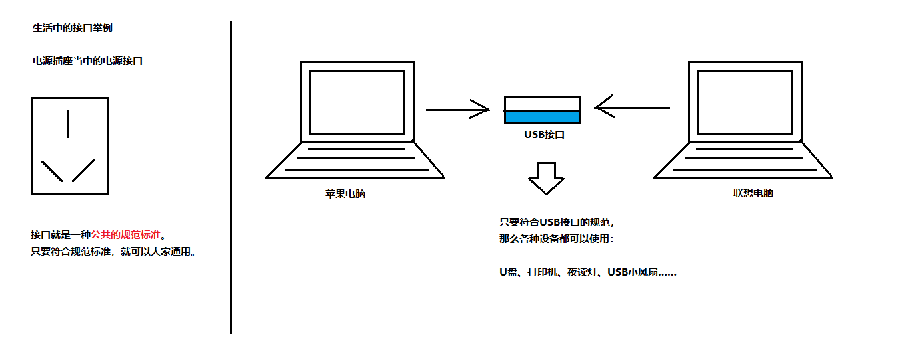

API 与 Scanner 类 API 的概述 API(Application Programming Interface) ，应用程序编程接口 类的说明文档
API 的使用步骤
API 的使用步骤：
1、打开帮助文档。
2、点击显示，找到索引，看到输入框。
3、你要找谁？在输入框里输入，然后回车。
4、看包。java.lang 下的类不需要导包，其他需要。
5、看类的解释和说明。
6、学习构造方法和使用成员方法。
什么是 Scanner 类 Scanner 类： 一个可以解析基本类型和字符串的简单 文本扫描器 System.in 中读取一个数：
1 2 Scanner sc = new Scanner(System.in); int i = sc.nextInt();
引用类型使用步骤 第一步：导包 import 关键字导包，在类的所有代码之前导包。java.lang 包下的所有类无需导包就可使用
1 2 3 4 5 import 包名.类名;import java.util.Scanner;
第二步：创建对象。
1 2 3 4 5 数据类型 变量名 = new 数据类型(参数列表); Scanner sc = new Scanner(System.in);
第三步： 调用方法。
1 2 3 4 5 变量名.方法名(); int i = sc.nextInt();
Scanner 练习： 使用 Scanner 类，完成接收键盘录入数据的操作
1 2 3 4 5 6 7 8 9 10 11 12 13 14 15 16 17 18 19 20 21 22 23 import java.util.Scanner;public class RandomTest public static void main (String[] args) Scanner sc = new Scanner(System.in); System.out.println("请录入一个整数：" ); int i = sc.nextInt(); System.out.println("i = " + i); } }
匿名对象 匿名对象： 没有变量名的对象。创建对象时，只有创建对象的语句，却没有把对象地址值赋值给某个变量。虽然是创建对象的简化写法，但是应用场景非常有限：作为方法的参数和作为返回值
创建匿名对象的格式以及举例如下：
1 2 3 4 5 new 类名(参数列表);new Scanner(System.in);
创建匿名对象直接调用方法，没有变量名。一旦调用两次方法
1 2 new Scanner(System.in).nextInt();new Scanner(System.in).nextInt();
匿名对象 作为方法的参数
1 2 3 4 5 6 7 8 9 10 11 12 13 14 15 16 public class Test public static void main (String[] args) Scanner sc = new Scanner(System.in); show(sc); show(new Scanner(System.in)); } public static void show (Scanner sc) System.out.println(sc); } }
匿名对象 作为返回值
1 2 3 4 5 6 7 8 9 10 11 12 13 14 15 16 17 public class Test public static void main (String[] args) Scanner sc = getScanner(); System.out.println(sc); } public static Scanner getScanner () return new Scanner(System.in); } }
Random 类 Random 类概述 Random 类 的实例用于 生成伪随机数 import 导包后才能使用。其 构造方法 public Random() 用于创建一个新的随机数生成器。常用 成员方法 public int nextInt(int n) 返回一个伪随机数，范围在0（包括）和指定 n （不包括）之间【左闭右开】 生成 20 个 100 以内的随机整数
1 2 3 4 5 6 7 8 9 10 11 12 13 14 import java.util.Random;public class RandomTest public static void main (String[] args) Random r = new Random(); for (int i = 0 ; i < 20 ; i++) { int number = r.nextInt(100 ); System.out.println("number: " + number); } } }
TIPS： 创建一个 Random 对象，每次调用 nextInt() 方法，都会生成一个随机数。
获取随机数 获取 1~50 之间的随机数，包含 50
1 2 3 4 5 6 7 8 9 10 11 import java.util.Random;public class RandomTest public static void main (String[] args) Random r = new Random(); int number = r.nextInt(50 ) + 1 ; System.out.println("number: " + number); } }
猜数字小游戏 游戏开始时，会随机生成一个 1~100 之间的整数 number guestNumber
1 2 3 4 5 6 7 8 9 10 11 12 13 14 15 16 17 18 19 20 21 22 23 24 25 26 27 28 29 30 31 import java.util.Random;import java.util.Scanner;public class GuestNumber public static void main (String[] args) Random r = new Random(); int number = r.nextInt(100 ) + 1 ; while (true ) { Scanner sc = new Scanner(System.in); System.out.println("请输入你要猜的数字(1~100)：" ); int guessNumber = sc.nextInt(); if (guessNumber > number) { System.out.println("你猜的数据" + guessNumber + "大了" ); } else if (guessNumber < number) { System.out.println("你猜的数据" + guessNumber + "小了" ); } else { System.out.println("恭喜你,猜中了" ); break ; } } } }
ArrayList 类 ArrayList 引入 如何存储多个对象呢？例如 存储三个学生对象 ArrayList 类了。代码如下：
1 2 3 4 5 6 7 8 9 10 11 12 13 14 15 16 17 18 19 20 21 22 23 24 25 26 27 28 29 30 31 32 33 34 35 36 37 38 39 40 41 42 43 44 45 46 47 48 49 50 51 52 53 54 55 56 57 58 59 import java.util.ArrayList;public class ArrayListTest public static void main (String arg[]) ArrayList<Student> list = new ArrayList<>(); Student stu1 = new Student("洪七公" , 20 ); Student stu2 = new Student("欧阳锋" , 21 ); Student stu3 = new Student("黄药师" , 22 ); Student stu4 = new Student("段智兴" , 23 ); list.add(stu1); list.add(stu2); list.add(stu3); list.add(stu4); for (int i = 0 ; i < list.size(); i++) { Student stu = list.get(i); System.out.println("姓名：" + stu.getName() + " <==> 年龄：" + stu.getAge()); } } } class Student private String name; private int age; public Student () } public Student (String name, int age) this .name = name; this .age = age; } public String getName () return name; } public void setName (String name) this .name = name; } public int getAge () return age; } public void setAge (int age) this .age = age; } }
什么是 ArrayList 类 ArrayList 是一个集合，类似于数组，都属于容器。详情及特性参照如下注释，代码如下：
1 2 3 4 5 6 7 8 9 10 11 12 13 14 15 16 17 18 19 20 21 22 23 24 25 26 27 28 29 30 31 32 import java.util.ArrayList;public class ArrayListTest public static void main (String[] args) ArrayList<String> list = new ArrayList<>(); System.out.println(list); list.add("赵丽颖" ); System.out.println(list); list.add("迪丽热巴" ); list.add("古力娜扎" ); list.add("玛尔扎哈" ); System.out.println(list); } }
常用方法和遍历 常用的方法
1 2 3 4 5 6 7 8 9 10 11 12 13 14 15 16 17 18 19 20 21 22 23 24 25 26 27 28 29 30 31 32 33 34 35 36 37 38 39 40 41 42 43 44 import java.util.ArrayList;public class ArrayListTest public static void main (String[] args) ArrayList<String> list = new ArrayList<>(); System.out.println(list); boolean success = list.add("柳岩" ); System.out.println(list); System.out.println("添加的动作是否成功：" + success); list.add("高圆圆" ); list.add("赵又廷" ); list.add("李小璐" ); list.add("贾乃亮" ); System.out.println(list); String name = list.get(2 ); System.out.println("第2号索引位置：" + name); String whoRemoved = list.remove(3 ); System.out.println("被删除的人是：" + whoRemoved); System.out.println(list); int size = list.size(); System.out.println("集合的长度是：" + size); } }
如何存储基本数据类型 ArrayList 对象 不能存储基本类型，只能存储引用类型的数据 <int> 写法是错误的，但是存储 基本数据类型对应的包装类型 < > 中的数据类型，必须转换后才能编写，转换写法如下：
1 2 3 4 5 6 7 8 9 10 11 12 13 14 15 16 17 18 19 20 21 22 23 24 25 26 27 28 29 30 31 32 33 34 35 36 37 import java.util.ArrayList;public class ArrayListTest public static void main (String[] args) ArrayList<Integer> list = new ArrayList<>(); list.add(100 ); list.add(200 ); System.out.println(list); int num = list.get(1 ); System.out.println("第1号元素是：" + num); } }
ArrayList 练习 数值添加到集合 生成 6 个 1~33 之间的随机整数
1 2 3 4 5 6 7 8 9 10 11 12 13 14 15 16 17 18 19 20 21 22 23 24 25 26 27 28 29 30 31 32 import java.util.ArrayList;import java.util.Random;public class RandomTest public static void main (String[] args) ArrayList<Integer> list = new ArrayList<>(); Random random = new Random(); for (int i = 0 ; i < 6 ; i++) { int num = random.nextInt(33 ) + 1 ; list.add(num); } for (int i = 0 ; i < list.size(); i++) { System.out.println(list.get(i)); } } }
对象添加到集合 自定义 4 个学生对象，添加到集合并遍历。代码如下：
1 2 3 4 5 6 7 8 9 10 11 12 13 14 15 16 17 18 19 20 21 22 23 24 25 26 27 28 29 30 31 32 33 34 35 36 37 38 39 40 41 42 43 44 45 46 47 48 49 50 51 52 53 54 55 56 57 58 59 import java.util.ArrayList;public class ArrayListTest public static void main (String arg[]) ArrayList<Student> list = new ArrayList<>(); Student stu1 = new Student("洪七公" , 20 ); Student stu2 = new Student("欧阳锋" , 21 ); Student stu3 = new Student("黄药师" , 22 ); Student stu4 = new Student("段智兴" , 23 ); list.add(stu1); list.add(stu2); list.add(stu3); list.add(stu4); for (int i = 0 ; i < list.size(); i++) { Student stu = list.get(i); System.out.println("姓名：" + stu.getName() + " <==> 年龄：" + stu.getAge()); } } } class Student private String name; private int age; public Student () } public Student (String name, int age) this .name = name; this .age = age; } public String getName () return name; } public void setName (String name) this .name = name; } public int getAge () return age; } public void setAge (int age) this .age = age; } }
打印集合方法 定义以指定格式打印集合的方法（ArrayList 类型作为参数） {} 把集合元素括起来，使用 @ 符号 分隔集合里面每个元素。格式参照：{元素@元素@元素} 。代码如下：
1 2 3 4 5 6 7 8 9 10 11 12 13 14 15 16 17 18 19 20 21 22 23 24 25 26 27 28 29 30 31 32 33 34 35 36 37 38 39 import java.util.ArrayList;public class RandomTest public static void main (String[] args) ArrayList<String> list = new ArrayList<>(); list.add("张三丰" ); list.add("宋远桥" ); list.add("张无忌" ); list.add("张翠山" ); System.out.println(list); printArrayList(list); } public static void printArrayList (ArrayList<String> list) System.out.print("{" ); for (int i = 0 ; i < list.size(); i++) { String name = list.get(i); if (i == list.size() - 1 ) { System.out.println(name + "}" ); } else { System.out.print(name + "@" ); } } } }
获取集合方法 用一个 大集合存入 20 个随机数字 筛选其中的偶数元素 要求： 使用自定义的方法来实现筛选。代码如下：
1 2 3 4 5 6 7 8 9 10 11 12 13 14 15 16 17 18 19 20 21 22 23 24 25 26 27 28 29 30 31 32 33 34 35 36 37 38 39 40 41 42 43 44 45 46 47 48 49 50 51 52 53 54 55 56 import java.util.ArrayList;import java.util.Random;public class RandomTest public static void main (String[] args) ArrayList<Integer> bigList = new ArrayList<>(); Random random = new Random(); for (int i = 0 ; i < 20 ; i++) { int num = random.nextInt(100 ) + 1 ; bigList.add(num); } ArrayList<Integer> smallList = getSmallList(bigList); System.out.println("偶数总共有多少个：" + smallList.size()); for (int i = 0 ; i < smallList.size(); i++) { System.out.println(smallList.get(i)); } } public static ArrayList<Integer> getSmallList (ArrayList<Integer> bigList) ArrayList<Integer> smallList = new ArrayList<>(); for (int i = 0 ; i < bigList.size(); i++) { int num = bigList.get(i); if (num % 2 == 0 ) { smallList.add(num); } } return smallList; } }
String 类 String 类的概述 String 类 代表字符串，位于 java.lang 包下 比较字符串，搜索字符串，提取子字符串以及创建具有翻译为大写或小写的所有字符的字符串
String 类的特点 第一个特点： 字符串不变
1 2 3 4 5 String str = "abc" ; str += "d" ; System.out.println(str);
第二个特点： 共享
1 2 3 String s1 = "abc" ; String s2 = "abc" ;
第三个特点： 与字符数组等效
1 2 3 4 5 6 7 8 9 String str1 = "abc" ; char data[] = {'a' , 'b' , 'c' };String str2 = new String(data); System.out.println(str1.equals(str2)); System.out.println(str1 == (str2));
String 类的使用和常量池 String 类的特点及创建方式都写于注释之中
1 2 3 4 5 6 7 8 9 10 11 12 13 14 15 16 17 18 19 20 21 22 23 24 25 26 27 28 29 30 31 32 33 34 35 36 37 38 39 public class StringTest public static void main (String[] args) String str1 = new String(); System.out.println("第1个字符串：" + str1); char [] charArray = {'A' , 'B' , 'C' }; String str2 = new String(charArray); System.out.println("第2个字符串：" + str2); byte [] byteArray = {97 , 98 , 99 }; String str3 = new String(byteArray); System.out.println("第3个字符串：" + str3); String str4 = "Hello" ; System.out.println("第4个字符串：" + str4); } }
String 类常量池的介绍及使用都写于注释之中
1 2 3 4 5 6 7 8 9 10 11 12 13 14 15 16 17 18 19 20 public class StringTest public static void main (String[] args) String str1 = "abc" ; String str2 = "abc" ; char [] charArray = {'a' , 'b' , 'c' }; String str3 = new String(charArray); System.out.println(str1 == str2); System.out.println(str1 == str3); System.out.println(str2 == str3); } }
常用方法 内容比较功能 String 类内容比较功能的介绍及使用都写于注释之中
1 2 3 4 5 6 7 8 9 10 11 12 13 14 15 16 17 18 19 20 21 22 23 24 25 26 27 28 29 30 31 32 33 34 35 36 37 38 39 40 41 42 public class StringTest public static void main (String[] args) String str1 = "Hello" ; String str2 = "Hello" ; char [] charArray = {'H' , 'e' , 'l' , 'l' , 'o' }; String str3 = new String(charArray); System.out.println(str1.equals(str2)); System.out.println(str2.equals(str3)); System.out.println(str3.equals("Hello" )); System.out.println("Hello" .equals(str1)); String str4 = "hello" ; System.out.println(str1.equals(str4)); System.out.println("=================" ); String str5 = null ; System.out.println("abc" .equals(str5)); System.out.println("=================" ); String strA = "Java" ; String strB = "java" ; System.out.println(strA.equals(strB)); System.out.println(strA.equalsIgnoreCase(strB)); System.out.println("abc一123" .equalsIgnoreCase("abc壹123" )); } }
获取功能 String 类获取功能的介绍及使用都写于注释之中
1 2 3 4 5 6 7 8 9 10 11 12 13 14 15 16 17 18 19 20 21 22 23 24 25 26 27 28 29 30 31 32 33 34 35 36 37 38 39 40 41 42 43 44 45 46 47 48 49 50 51 52 53 54 55 56 57 public class StringTest public static void main (String[] args) int length = "asdasfeutrvauevbueyvb" .length(); System.out.println("字符串的长度是：" + length); String str1 = "Hello" ; String str2 = "World" ; String str3 = str1.concat(str2); System.out.println(str1); System.out.println(str2); System.out.println(str3); System.out.println("==============" ); char ch = "Hello" .charAt(1 ); System.out.println("在 1 号索引位置的字符是：" + ch); System.out.println("==============" ); String original = "HelloWorldHelloWorld" ; int index = original.indexOf("llo" ); System.out.println("第一次索引值是：" + index); System.out.println("HelloWorld" .indexOf("abc" )); matchString("HelloWorldHelloWorld" ,"llo" ); } public static int matchString (String str1, String str2) int i = str1.indexOf(str2); if (!(i == -1 )){ System.out.println("match is succeed , the location is : " + i); return i; } else { System.out.println("the match is failure" ); return -1 ; } } }
截取功能 String 类截取功能的介绍及使用都写于注释之中
1 2 3 4 5 6 7 8 9 10 11 12 13 14 15 16 17 18 19 20 21 22 23 24 25 26 27 28 29 30 31 public class StringTest public static void main (String[] args) String str1 = "HelloWorld" ; String str2 = str1.substring(5 ); System.out.println(str1); System.out.println(str2); System.out.println("================" ); String str3 = str1.substring(4 , 7 ); System.out.println(str3); System.out.println("================" ); String str = "Hello" ; System.out.println(str); str = "Java" ; System.out.println(str); } }
转换功能 String 类转换功能的介绍及使用都写于注释之中
1 2 3 4 5 6 7 8 9 10 11 12 13 14 15 16 17 18 19 20 21 22 23 24 25 26 27 28 29 30 31 32 33 34 35 36 37 38 39 40 41 42 43 public class StringTest public static void main (String[] args) char [] chars = "Hello" .toCharArray(); System.out.println(chars[0 ]); System.out.println(chars.length); System.out.println("==============" ); byte [] bytes = "abc" .getBytes(); for (int i = 0 ; i < bytes.length; i++) { System.out.println(bytes[i]); } System.out.println("==============" ); String str1 = "How do you do?" ; String str2 = str1.replace("o" , "*" ); System.out.println(str1); System.out.println(str2); System.out.println("==============" ); String lang1 = "会不会玩儿呀！你大爷的！你大爷的！你大爷的！！！" ; String lang2 = lang1.replace("大爷" , "**" ); System.out.println(lang2); } }
分割功能 String 类分割功能的介绍及使用都写于注释之中
1 2 3 4 5 6 7 8 9 10 11 12 13 14 15 16 17 18 19 20 21 22 23 24 25 26 27 28 29 30 31 32 33 34 35 36 37 public class StringTest public static void main (String[] args) String str1 = "aaa,bbb,ccc" ; String[] array1 = str1.split("," ); for (int i = 0 ; i < array1.length; i++) { System.out.println(array1[i]); } System.out.println("===============" ); String str2 = "aaa bbb ccc" ; String[] array2 = str2.split(" " ); for (int i = 0 ; i < array2.length; i++) { System.out.println(array2[i]); } System.out.println("===============" ); String str3 = "XXX.YYY.ZZZ" ; String[] array3 = str3.split("\\." ); System.out.println(array3.length); for (int i = 0 ; i < array3.length; i++) { System.out.println(array3[i]); } } }
String 类练习 拼接字符串 拼接字符串的介绍和思路分析都写于注释之中
1 2 3 4 5 6 7 8 9 10 11 12 13 14 15 16 17 18 19 20 21 22 23 24 25 26 27 28 29 30 31 32 33 34 35 36 public class StringTest public static void main (String[] args) int [] array = {1 , 2 , 3 , 4 }; String result = fromArrayToString(array); System.out.println(result); } public static String fromArrayToString (int [] array) String str = "[" ; for (int i = 0 ; i < array.length; i++) { if (i == array.length - 1 ) { str += "word" + array[i] + "]" ; } else { str += "word" + array[i] + "#" ; } } return str; } }
统计字符个数 统计字符个数的介绍和思路分析都写于注释之中
1 2 3 4 5 6 7 8 9 10 11 12 13 14 15 16 17 18 19 20 21 22 23 24 25 26 27 28 29 30 31 32 33 34 35 36 37 38 39 40 41 42 43 44 45 46 47 48 import java.util.Scanner;public class StringTest public static void main (String[] args) Scanner sc = new Scanner(System.in); System.out.println("请输入一个字符串：" ); String str = sc.next(); int countUpper = 0 ; int countLower = 0 ; int countNumber = 0 ; int countOther = 0 ; char [] charArray = str.toCharArray(); for (int i = 0 ; i < charArray.length; i++) { char ch = charArray[i]; if ('A' <= ch && ch <= 'Z' ) { countUpper++; } else if ('a' <= ch && ch <= 'z' ) { countLower++; } else if ('0' <= ch && ch <= '9' ) { countNumber++; } else { countOther++; } } System.out.println("大写字母有：" + countUpper); System.out.println("小写字母有：" + countLower); System.out.println("数字0~9有：" + countNumber); System.out.println("其他字符有：" + countOther); } }
static 关键字 static 概述 static 关键字： 它可以用来修饰 成员变量 成员方法
static 特殊用法： 用 static 修饰内部类，普通类是不允许声明为静态的，只有内部类才可以
1 2 3 4 5 6 7 8 9 10 11 12 13 14 15 16 public class StaticTest public static void main (String[] args) new OuterClass.InnerClass(); } } class OuterClass public static class InnerClass InnerClass() { System.out.println("===== 我是一个内部类 InnerClass =====" ); } } }
注意啦！！！
当一个内部类没有使用 static 修饰的时候，是不能直接使用内部类创建对象，必须要 外部类对象.new 内部类 举例： new Outer().new Inner();
定义和使用格式 1 2 3 4 5 6 当 static 修饰成员变量时，该变量称为 +类变量+ 。该类的每个对象都共享同一个类变量的值。 任何对象都可以更改该 +类变量+ 的值，但也可以在不创建该类的对象的情况下对类变量进行操作。 static 数据类型 变量名;
static 关键字
1 2 3 4 5 6 7 8 9 10 11 12 13 14 15 16 17 18 19 20 21 22 23 24 25 26 27 28 29 30 31 32 33 34 35 36 37 38 39 40 41 42 43 44 45 46 47 48 49 50 51 52 53 54 55 56 57 58 59 public class StaticTest public static void main (String[] args) Student two = new Student("黄蓉" , 16 ); two.room = "101教室" ; System.out.println("姓名：" + two.getName() + "，年龄：" + two.getAge() + "，教室：" + two.room + "，学号：" + two.getId()); Student one = new Student("郭靖" , 19 ); System.out.println("姓名：" + one.getName() + "，年龄：" + one.getAge() + "，教室：" + one.room + "，学号：" + one.getId()); } } class Student public static String room; private String name; private int age; private int id; public int getId () return id; } public void setId (int id) this .id = id; } public Student () } public Student (String name, int age) this .name = name; this .age = age; } public String getName () return name; } public void setName (String name) this .name = name; } public int getAge () return age; } public void setAge (int age) this .age = age; } }
静态方法 当 static 修饰成员方法时， 类方法 。静态方法在声明中有 static ，建议使用类名来调用，而不需要创建类的对象。
1 2 3 4 5 6 7 8 9 10 11 12 修饰符 static 返回值类型 方法名(参数列表) { // 执行语句 } + 静态方法可以直接访问类变量和静态方法 + 静态方法不能直接访问普通成员变量或成员方法。反之，成员方法可以直接访问类变量或静态方法 + 静态方法中，不能使用 this 关键字 + 静态方法只能访问静态成员
1 2 3 4 5 6 7 8 9 10 11 被 static 修饰的成员可以并且建议通过类名直接访问。虽然也可以通过对象名访问静态成员，但是不建议这么做。 原因是多个对象均属于一个类，共享同一个静态成员，从而会出现警告信息。 类名.类变量名; 类名.静态方法名(参数);
静态方法的调用演示，代码如下：
1 2 3 4 5 6 7 8 9 10 11 12 13 14 15 16 17 18 19 20 21 22 23 24 25 26 27 28 29 30 31 32 33 34 35 36 37 38 39 40 41 42 43 44 45 46 public class StaticMethodTest public static void main (String[] args) MyClass obj = new MyClass(); obj.method(); obj.methodStatic(); MyClass.methodStatic(); myMethod(); StaticMethodTest.myMethod(); } public static void myMethod () System.out.println("自己的方法！" ); } } class MyClass public void method () System.out.println("我是没有 static 修饰的方法" ); } static void methodStatic () System.out.println("我是有 static 修饰的方法" ); } }
静态原理图解 1 2 3 4 5 6 7 + 随着类的加载而加载的，且只加载一次。 + 存储于一块固定的内存区域（静态区），所以，可以直接被类名调用。 + 它优先于对象存在，所以，可以被所有对象共享。
static 的原理图解如下：
静态代码块 静态代码块： 执行优先级高于非静态的初始化块，它会在类初始化的时候执行一次，执行完成便销毁
1 2 3 4 5 6 7 8 9 10 11 12 13 14 15 16 17 18 19 20 21 22 23 24 25 26 27 28 29 30 31 32 33 34 public class StaticBlock public static void main (String[] args) Person one = new Person(); Person two = new Person(); } } class Person static { System.out.println("静态代码块执行！" ); } public Person () System.out.println("构造方法执行！" ); } }
温馨小提示： 静态代码块的执行顺序：静态代码块—–>非静态代码块——–>构造函数
Arrays 类 Arrays 概述 java.util.Arrays 类 是一个与数组相关的工具类，里面提供了大量静态方法，用来实现数组常见的操作。
Arrays 类 中的 常用方法
1 2 3 4 5 6 7 8 9 10 11 12 13 14 15 16 17 18 19 20 21 22 23 24 25 26 27 28 29 30 import java.util.Arrays;public class ArraysMethods public static void main (String[] args) int [] arr = {10 , 20 , 30 }; String str = Arrays.toString(arr); System.out.println(str); int [] array = {2 , 1 , 3 , 10 , 6 }; Arrays.sort(array); System.out.println(Arrays.toString(array)); String[] strArr = {"bbb" , "aaa" , "ccc" }; Arrays.sort(strArr); System.out.println(Arrays.toString(strArr)); } }
Arrays 练习 请使用 Arrays 相关的 API ，将一个随机字符串中的所有字符升序排列，并倒序打印。
1 2 3 4 5 6 7 8 9 10 11 12 13 14 15 16 17 18 19 20 21 22 23 import java.util.Arrays;public class ArraysPractise public static void main (String[] args) String str = "asv76agfqwdfvasdfvjh" ; char [] chars = str.toCharArray(); Arrays.sort(chars); for (int i = chars.length - 1 ; i >= 0 ; i--) { System.out.print(chars[i]); } } }
Math 类 Math 类概述 java.util.Math 类 是一个很有用的数学帮助类，该类包含用于执行基本数学运算的方法，如 初等指数、对数、平方根和三角函数 首先它和 String 类一样都是用 final 修饰，所以不能有子类。还有就是它的构造方法是私有的，也就是我们不能通过 new 的方法在其它类中构造 Math 对象。
Math 类 中的 常用方法
1 2 3 4 5 6 7 8 9 10 11 12 13 14 15 16 17 18 19 20 21 22 23 24 25 26 27 28 29 30 31 32 33 34 35 36 37 38 39 40 41 42 43 44 45 46 47 48 49 50 51 52 53 54 55 56 57 58 59 60 61 62 63 64 65 public static void main (String[] args) System.out.println("绝对值：" + Math.abs( -235.345 )); System.out.println("绝对值：" + Math.abs(235.345 )); System.out.println("---------------" ); System.out.println("向上取整：" + Math.ceil(545.001 )); System.out.println("向上取整：" + Math.ceil(545.999 )); System.out.println("---------------" ); System.out.println("向下取整：" +Math.floor(545.001 )); System.out.println("向下取整：" +Math.floor(545.999 )); System.out.println("---------------" ); System.out.println("四舍五入：" +Math.round(545.499 )); System.out.println("四舍五入：" +Math.round(545.500 )); System.out.println("四舍五入：" +Math.round(-54.499 )); System.out.println("四舍五入：" +Math.round(-54.501 )); System.out.println("四舍五入：" +Math.round(-1.5 )); System.out.println("四舍五入：" +Math.round(-1.51 )); System.out.println("---------------" ); System.out.println("圆周率：" + Math.PI); System.out.println("自然常数：" + Math.E); System.out.println("---------------" ); System.out.println("2的10次方：" + Math.pow(2 ,10 )); System.out.println("---------------" ); double degree = 45.0 ; double radians = Math.toRadians(degree); System.out.println(Math.cos(radians)); System.out.println(Math.sin(radians)); System.out.println(Math.tan(radians)); System.out.println("---------------" ); System.out.println("4的平方根：" + Math.sqrt(4 )); System.out.println("27的立方根：" + Math.cbrt(27 )); System.out.println("生成一个1~100的随机数：" + (int )(Math.random() * 100 + 1 )); System.out.println("生成一个0~100的随机数：" + (int )(Math.random() * 101 )); }
Math 练习 计算在 -10.8 到 5.9 之间，绝对值大于 6 或者小于 2.1 的整数有多少个？
1 2 3 4 5 6 7 8 9 10 11 12 13 14 15 16 17 18 19 20 21 22 23 24 25 26 27 28 29 30 public static void main (String[] args) int count = 0 ; double min = -10.8 ; double max = 5.9 ; for (int i = (int ) min; i < max; i++) { int abs = Math.abs(i); if (abs > 6 || abs < 2.1 ) { System.out.println(i); count++; } } System.out.println("总共有：" + count); }
继承 继承初识 继承 是 java 面向对象编程技术的一块基石，因为它允许创建分等级层次的类。继承就是子类继承父类的特征和行为，使得子类对象（实例）具有父类的实例域和方法。
继承的由来 当多个类中存在相同属性和行为时，将这些相同的内容抽取到一个单独的类中 子类 ，单独那一个类称为 父类、超类（superclass）或者基类 。如图所示：
继承描述的是事物之间的所属关系，这种关系是：is-a 的关系。例如，图中兔子属于食草动物，食草动物属于动物。可见，父类更通用，子类更具体。我们通过继承，可以使多种事物之间形成一种关系体系。
继承的定义、好处与格式 1 2 3 4 5 6 7 8 9 10 11 12 13 14 15 16 17 18 继承就是子类继承父类的属性和行为，使得子类对象具有与父类相同的属性、相同的行为。子类可以直接访问父类中的"非私有"的属性和行为。 + 提高代码的复用性。 + 类与类之间产生了关系，是多态的前提。 通过 extends 关键字，可以声明一个子类继承另外一个父类，定义格式如下： + class 父类 { + ... + } + + class 子类 extends 父类 { + ... + }
继承示例 通过上述介绍，我们编写相关代码来实现继承操作。代码如下：
1 2 3 4 5 6 7 8 9 10 11 12 13 14 15 16 17 18 19 20 21 22 23 24 25 26 27 28 29 30 class Animal public String name; public double weight; public void eat () System.out.println("我要吃饭了！" ); } } class Lion extends Animal } public class ExtendsTest public static void main (String[] args) Lion lion = new Lion(); String name = lion.name = "狮子" ; double weight = lion.weight = 500 ; System.out.println("我是" + name + "，我的体重是 " + weight); lion.eat(); } }
继承后的各种特点 当类之间产生了关系后，其中各类中的成员变量与成员方法等等，又产生了哪些影响呢？
成员变量不重名 如果子类父类中出现不重名的成员变量，这时的访问是没有影响的。代码如下：
1 2 3 4 5 6 7 8 9 10 11 12 13 14 15 16 17 18 19 20 21 22 23 24 25 26 27 28 29 30 31 32 33 34 class Fu int numFu = 5 ; } class Zi extends Fu int numZi = 10 ; public void show () System.out.println("numFu = " + numFu); System.out.println("numZi = " + numZi); } } public class ExtendsTest public static void main (String[] args) Zi zi = new Zi(); zi.show(); } }
成员变量重名 如果子类父类中出现重名的成员变量，这时的访问是有影响的。子父类中出现了同名的成员变量时，在子类中需要访问父类中非私有成员变量时，需要使用 super 关键字，修饰父类成员变量 super 类似于之前学过的 this 关键字。对应代码如下：
1 2 3 4 5 6 7 8 9 10 11 12 13 14 15 16 17 18 19 20 21 22 23 24 25 26 27 28 29 30 31 32 33 34 35 36 37 class Fu int num = 10 ; } class Zi extends Fu int num = 20 ; public void method () int num = 30 ; System.out.println(num); System.out.println(this .num); System.out.println(super .num); } } public class ExtendsTest public static void main (String[] args) Zi zi = new Zi(); zi.method(); } }
小提示： 父类中的成员变量是非私有的，子类中可以直接访问。若父类中的成员变量私有了，子类是不能直接访问的 我们遵循封装的原则，使用 private 修饰成员变量
成员方法不重名 如果子类父类中出现不重名的成员方法，这时的调用是没有影响的。对象调用方法时，会先在子类中查找有没有对应的方法，若子类中存在就会执行子类中的方法，若子类中不存在就会执行父类中相应的方法。
1 2 3 4 5 6 7 8 9 10 11 12 13 14 15 16 17 18 19 20 21 22 23 24 25 26 27 class Fu public void showFu () System.out.println("Fu 类方法执行！" ); } } class Zi extends Fu public void showZi () System.out.println("Zi 类方法执行！" ); } } public class ExtendsTest public static void main (String[] args) Zi zi = new Zi(); zi.showFu(); zi.showZi(); } }
成员方法重名 如果子类和父类中出现重名的成员方法 方法重写(Override) ，即子类中出现与父类一模一样的方法时（返回值类型，方法名和参数列表都相同），会出现覆盖效果，也称为 重写或者复写【声明不变，重新实现】
1 2 3 4 5 6 7 8 9 10 11 12 13 14 15 16 17 18 19 20 21 22 23 24 25 26 27 28 29 30 31 32 class Fu public String method () return null ; } } class Zi extends Fu @Override public String method () return "The method has been Overridden!!!" ; } } public class OverrideTest }
重写的应用 子类可以根据需要，定义特定于自己的行为。
1 2 3 4 5 6 7 8 9 10 11 12 13 14 15 16 17 18 19 20 21 22 23 24 25 26 27 28 29 30 31 32 33 34 35 36 37 38 39 40 41 42 43 44 45 46 47 48 49 50 51 class Phone public void call () System.out.println("打电话" ); } public void send () System.out.println("发短信" ); } public void show () System.out.println("显示号码" ); } } class NewPhone extends Phone @Override public void show () super .show(); System.out.println("显示姓名" ); System.out.println("显示头像" ); } } public class PhoneTest public static void main (String[] args) Phone phone = new Phone(); phone.call(); phone.send(); phone.show(); System.out.println("==========" ); NewPhone newPhone = new NewPhone(); newPhone.call(); newPhone.send(); newPhone.show(); } }
注意事项：
1、子类方法覆盖父类方法，必须要保证权限大于等于父类权限。
构造方法 构造方法的继承可通给 super 关键字来调用。代码如下：
1 2 3 4 5 6 7 8 9 10 11 12 13 14 15 16 17 18 19 20 21 22 23 24 25 26 27 28 29 30 31 32 33 34 35 36 37 38 39 40 public class ConstructorTest public static void main (String[] args) Zi zi = new Zi(); } } class Fu public Fu () System.out.println("父类无参构造" ); } public Fu (int num) System.out.println("父类有参构造！" ); } } class Zi extends Fu public Zi () super (); System.out.println("子类构造方法！" ); } public void method () } }
Java 继承的特点
Java 继承的特点：
1、子类拥有父类非 private 的属性、方法。Java 的继承是单继承，也可以多重继承，但是不能是多继承。 单继承 就是一个子类只能继承一个父类，多重继承 就是：例如 A 类继承 B 类，B 类继承 C 类，所以按照关系就是 C 类是 B 类的父类，B 类是 A 类的父类，这是 Java 继承区别于 C++ 继承的一个特性。图如下：
5 提高了类之间的耦合性（继承的缺点
super 和 this 父类空间优先于子类对象产生，在每次创建子类对象时，先初始化父类空间，再创建其子类对象本身。 代码体现在子类的构造方法调用时，一定先调用父类的构造方法。
super 关键字 super 的三种用法如下：
1 2 3 4 5 6 7 + 1、在子类的成员方法中，访问父类的成员变量。 + 2、在子类的成员方法中，访问父类的成员方法。 + 3、在子类的构造方法中，访问父类的构造方法。
super 的代码演示如下：
1 2 3 4 5 6 7 8 9 10 11 12 13 14 15 16 17 18 19 20 21 22 23 24 25 26 27 28 29 30 31 32 33 34 35 36 37 public class SuperTest public static void main (String[] args) Zi zi = new Zi(); zi.method(); zi.methodZi(); } } class Fu int num = 10 ; public void method () System.out.println("父类方法" ); } } class Zi extends Fu int num = 20 ; public Zi () super (); } public void methodZi () System.out.println(super .num); } public void method () super .method(); System.out.println("子类方法" ); } }
this 关键字 this 的三种用法如下：
1 2 3 4 5 6 7 8 9 10 11 12 + 1、在本类的成员方法中，访问本类的成员变量。 + 2、在本类的成员方法中，访问本类的另一个成员方法。 + 3、在本类的构造方法中，访问本类的另一个构造方法。 + 1、this(...) 调用也必须是构造方法的第一个语句，唯一一个。 + 2、super 和 this 两种构造调用，不能同时使用。
this 的代码演示如下：
1 2 3 4 5 6 7 8 9 10 11 12 13 14 15 16 17 18 19 20 21 22 23 24 25 26 27 28 29 30 31 32 33 34 35 36 37 38 39 40 41 42 43 44 45 46 47 48 49 50 51 52 53 54 55 public class ThisTest public static void main (String[] args) Zi zi = new Zi(); zi.showNum(); zi.methodB(); } } class Fu int num = 30 ; Fu() { System.out.println("father" ); } } class Zi extends Fu int num = 20 ; public Zi () this (123 ); } public Zi (int n) this (n, 2 ); } public Zi (int n, int m) System.out.println(n + m); } public void showNum () int num = 10 ; System.out.println(num); System.out.println(this .num); System.out.println(super .num); } public void methodA () System.out.println("AAA" ); } public void methodB () this .methodA(); System.out.println("BBB" ); } }
注意一下： 两个方法不能相互调用，会出现死循环，导致的结果是栈内存溢出。
1 2 3 4 5 6 7 8 9 10 11 12 13 14 15 16 17 18 19 20 21 22 23 24 25 26 27 public class Test public static void main (String[] args) Zi zi = new Zi(); zi.method01(); } } class Fu } class Zi extends Fu public void method01 () this .method02(); System.out.println("Hello" ); } public void method02 () this .method01(); System.out.println("World" ); } }
上述的 method01() 方法和 method02()方法 栈内存溢出【StackOverflowError】 。如下所示：
1 2 3 4 5 6 7 8 9 10 Exception in thread "main" java.lang.StackOverflowError at Zi.method02(Test.java:28 ) at Zi.method01(Test.java:23 ) at Zi.method02(Test.java:28 ) at Zi.method01(Test.java:23 ) at Zi.method02(Test.java:28 ) at Zi.method01(Test.java:23 ) at Zi.method02(Test.java:28 ) at Zi.method01(Test.java:23 ) ……
注意啦！！！
子类的每个构造方法中均有默认的 super() ，调用父类的空参构造。手动调用父类构造会覆盖默认的 super() 。super() 和 this() 都必须是在构造方法的第一行，所以不能同时出现。
两者的内存图 super 和 this 的内存图如下【您品，您细品】：
抽象类 抽象类概述 父类中的方法，被它的子类们重写，子类各自的实现都不尽相同。那么父类的方法声明和方法主体，只有声明还有意义，而方法主体则没有存在的意义了。我们把 没有方法主体的方法 抽象方法 。Java 语法规定，包含抽象方法的类 抽象类 。【注意哦！抽象类不一定有抽象方法，但包含抽象方法的类就是抽象类】
1 2 3 4 5 6 7 8 9 10 11 12 13 14 15 16 17 18 19 20 21 22 23 24 25 26 27 28 29 30 31 32 33 34 35 36 37 38 39 40 41 42 43 44 45 abstract class Animal public abstract void eat () public void normalMethod () System.out.println("normal method" ); } } class Cat extends Animal @Override public void eat () System.out.println("猫吃鱼" ); } } public class AbstractTest public static void main (String[] args) Cat cat = new Cat(); cat.eat(); } }
注意事项 关于抽象类的使用，以下为语法上要注意的细节，虽然条目较多，但若理解了抽象的本质，无需死记硬背。
1 2 3 4 5 6 7 8 9 10 11 12 13 14 15 - 抽象类不能创建对象，如果创建，编译无法通过而报错。只能创建其非抽象子类的对象。 + 理解：假设创建了抽象类的对象，调用抽象的方法，而抽象方法没有具体的方法体，没有意义。 - 抽象类中，可以有构造方法，是供子类创建对象时，初始化父类成员使用的。 + 理解：子类的构造方法中，有默认的 super() ，需要访问父类构造方法。 - 抽象类中不一定包含抽象方法，但是有抽象方法的类必定是抽象类。 + 理解：未包含抽象方法的抽象类，目的就是不想让调用者创建该类对象，通常用于某些特殊的类结构设计。 - 抽象类的子类，必须重写抽象父类中所有的抽象方法，否则，编译无法通过而报错。除非该子类也是抽象类。 + 理解：假设子类不重写所有抽象方法，则子类中可能包含抽象方法。那么在子类创建对象后，调用抽象的方法，没有意义。
综合案例 案例描述 1 2 3 4 5 6 7 8 + 某群有多名成员，群主给成员发普通红包。普通红包的规则： - 1、群主的一笔金额，从群主余额中扣除，平均分成n等份，让成员领取。 - 2、成员领取红包后，保存到成员余额中。 + 请根据描述，完成案例中所有类的定义以及指定类之间的继承关系，并完成发红包的操作。
案例分析 根据描述分析，得出如下继承体系：
代码实现 定义 User 用户类，
1 2 3 4 5 6 7 8 9 10 11 12 13 14 15 16 17 18 19 20 21 22 23 24 25 26 27 28 29 30 31 32 33 34 35 public class User private String name; private int money; public User () } public User (String name, int money) this .name = name; this .money = money; } public void show () System.out.println("我叫：" + name + "，我有多少钱：" + money); } public String getName () return name; } public void setName (String name) this .name = name; } public int getMoney () return money; } public void setMoney (int money) this .money = money; } }
定义 Manager 群主类，
1 2 3 4 5 6 7 8 9 10 11 12 13 14 15 16 17 18 19 20 21 22 23 24 25 26 27 28 29 30 31 32 33 34 35 36 37 38 39 40 41 42 43 44 import java.util.ArrayList;public class Manager extends User public Manager () } public Manager (String name, int money) super (name, money); } public ArrayList<Integer> send (int totalMoney, int count) ArrayList<Integer> redList = new ArrayList<>(); int leftMoney = super .getMoney(); if (totalMoney > leftMoney) { System.out.println("余额不足" ); return redList; } super .setMoney(leftMoney - totalMoney); int avg = totalMoney / count; int mod = totalMoney % count; for (int i = 0 ; i < count - 1 ; i++) { redList.add(avg); } int last = avg + mod; redList.add(last); return redList; } }
定义 Member 群成员类，
1 2 3 4 5 6 7 8 9 10 11 12 13 14 15 16 17 18 19 20 21 22 23 24 25 26 27 28 29 30 import java.util.ArrayList;import java.util.Random;public class Member extends User public Member () } public Member (String name, int money) super (name, money); } public void receive (ArrayList<Integer> list) int index = new Random().nextInt(list.size()); int delta = list.remove(index); int money = super .getMoney(); super .setMoney(money + delta); } }
定义 LuckMoneyTest 测试类，
1 2 3 4 5 6 7 8 9 10 11 12 13 14 15 16 17 18 19 20 21 22 23 24 25 26 27 28 29 30 31 32 import java.util.ArrayList;public class LuckMoneyTest public static void main (String[] args) Manager manager = new Manager("群主" , 100 ); Member one = new Member("成员A" , 0 ); Member two = new Member("成员B" , 0 ); Member three = new Member("成员C" , 0 ); manager.show(); one.show(); two.show(); three.show(); System.out.println("===============" ); ArrayList<Integer> redList = manager.send(20 , 3 ); one.receive(redList); two.receive(redList); three.receive(redList); manager.show(); one.show(); two.show(); three.show(); } }
最后的随机测试结果如下 【随机的不唯一】
1 2 3 4 5 6 7 8 9 我叫：群主，我有多少钱：100 我叫：成员A，我有多少钱：0 我叫：成员B，我有多少钱：0 我叫：成员C，我有多少钱：0 =========================== 我叫：群主，我有多少钱：50 我叫：成员A，我有多少钱：16 我叫：成员B，我有多少钱：16 我叫：成员C，我有多少钱：18
接口 接口的概述 接口 是 Java 语言中的一种 引用数据类型 抽象方法（JDK7及以前），默认方法和静态方法（JDK8），私有方法（JDK9）。
接口的定义，它与定义类方式相似，但是使用 interface 关键字来定义一个接口。它也会被编译成 .class 文件
接口的使用，它不能创建对象，但是可以被实现（ implements ，类似于被继承）。一个实现接口的类（可以看做是接口的子类），需要实现接口中所有的抽象方法，
生活中接口和 Java 中接口对比：
引用数据类型： 数组，类，接口等等

接口的定义格式 接口的定义格式，代码如下：
1 2 3 4 5 6 7 8 public interface 接口名称 }
接口的定义的示例代码如下【下面的过程中会使用到】：
1 2 3 4 5 6 7 8 9 10 11 12 13 14 15 16 public interface MyInterfaceAbstract public abstract void methodAbs1 () abstract void methodAbs2 () public void methodAbs3 () void methodAbs4 () }
抽象方法 抽象方法的定义 抽象方法的定义
1 2 3 4 5 6 7 8 9 10 11 + 在任何版本的 Java 中，接口都能定义抽象方法。 + 抽象方法定义格式：public abstract 返回值类型 方法名称(参数列表); - 注意事项： + 1、接口当中的抽象方法，修饰符必须是两个固定的关键字：public abstract + 2、这两个关键字修饰符，可以选择性地省略。（如果是刚学，不推荐省略。） + 3、方法的三要素，可以随意定义。
抽象方法的使用 第一步： 先定义 MyInterfaceAbstract 接口
1 2 3 4 5 6 7 8 9 10 11 12 13 14 15 16 17 18 19 20 21 22 23 24 public class MyInterfaceAbstractImpl implements MyInterfaceAbstract @Override public void methodAbs1 () System.out.println("这是第一个方法！" ); } @Override public void methodAbs2 () System.out.println("这是第二个方法！" ); } @Override public void methodAbs3 () System.out.println("这是第三个方法！" ); } @Override public void methodAbs4 () System.out.println("这是第四个方法！" ); } }
第二步： 使用抽象方法
1 2 3 4 5 6 7 8 9 10 11 12 13 14 15 16 17 18 19 20 21 22 23 24 25 26 27 28 29 30 31 32 33 34 35 36 37 38 public class AbstractMethodTest public static void main (String[] args) MyInterfaceAbstractImpl impl = new MyInterfaceAbstractImpl(); impl.methodAbs1(); impl.methodAbs2(); } }
默认方法 默认方法的定义 默认方法的定义
1 2 3 4 5 6 7 8 9 10 11 12 + 从 Java 8 开始，接口里允许定义默认方法。 + 默认方法的格式： + public default 返回值类型 方法名称(参数列表) { + // 内容 + } - 默认方法用处：接口当中的默认方法，可以解决接口升级的问题。
默认方法的使用 第一步： 先定义 MyInterfaceDefault 接口
1 2 3 4 5 6 7 8 9 10 11 12 13 14 15 public interface MyInterfaceDefault public abstract void methodAbs () public default void methodDefault () System.out.println("这是新添加的默认方法" ); } }
第二步： 定义 MyInterfaceDefault 接口
1 2 3 4 5 6 7 8 9 10 11 12 13 14 15 16 17 18 19 20 21 22 23 24 public class MyInterfaceDefaultA implements MyInterfaceDefault @Override public void methodAbs () System.out.println("实现了抽象方法，AAA" ); } } public class MyInterfaceDefaultB implements MyInterfaceDefault @Override public void methodAbs () System.out.println("实现了抽象方法，BBB" ); } @Override public void methodDefault () System.out.println("实现类B覆盖重写了接口的默认方法" ); } }
第三步： 定义测试类
1 2 3 4 5 6 7 8 9 10 11 12 13 14 15 16 17 18 19 20 21 22 public class DefaultMethodTest public static void main (String[] args) MyInterfaceDefaultA a = new MyInterfaceDefaultA(); a.methodAbs(); a.methodDefault(); System.out.println("==========" ); MyInterfaceDefaultB b = new MyInterfaceDefaultB(); b.methodAbs(); b.methodDefault(); } }
静态方法 静态方法的定义 1 2 3 4 5 6 7 8 9 10 11 12 + 从 Java 8 开始，接口当中允许定义静态方法。 + 静态方法的格式： + public static 返回值类型 方法名称(参数列表) { + 方法体 + } + 提示：就是将 abstract 或者 default 换成 static 即可，带上方法体。
静态方法的使用 第一步： 定义 MyInterfaceStatic 接口
1 2 3 4 5 6 7 8 public interface MyInterfaceStatic public static void methodStatic () System.out.println("这是接口的静态方法！" ); } }
第二步： 定义 MyInterfaceStatic 接口
1 2 3 public class MyInterfaceStaticImpl implements MyInterfaceStatic }
第三步： 定义测试类
1 2 3 4 5 6 7 8 9 10 11 12 13 14 15 16 17 18 19 20 public class StaticMethodTest public static void main (String[] args) MyInterfaceStaticImpl impl = new MyInterfaceStaticImpl(); MyInterfaceStatic.methodStatic(); } }
私有方法 私有方法的定义 1 2 3 4 5 6 7 8 9 10 11 12 13 14 15 16 17 18 + 问题描述：我们需要抽取一个共有方法，用来解决两个默认方法之间重复代码的问题。但是这个共有方法不应该让实现类使用，应该是私有化的。 + 解决方案：从 Java 9 开始，接口当中允许定义私有方法。 + - 1、普通私有方法，解决多个默认方法之间重复代码问题 + 普通私有方法的格式： + private 返回值类型 方法名称(参数列表) { + 方法体 + } + - 2、静态私有方法，解决多个静态方法之间重复代码问题 + 静态私有方法的格式： + private static 返回值类型 方法名称(参数列表) { + 方法体 + }
私有方法的使用 第一步： 定义两个接口：MyInterfacePrivateA 和 MyInterfacePrivateB
1 2 3 4 5 6 7 8 9 10 11 12 13 14 15 16 17 18 19 20 public interface MyInterfacePrivateA public default void methodDefault1 () System.out.println("默认方法1" ); methodCommon(); } public default void methodDefault2 () System.out.println("默认方法2" ); methodCommon(); } private void methodCommon () System.out.println("AAA" ); System.out.println("BBB" ); System.out.println("CCC" ); } }
1 2 3 4 5 6 7 8 9 10 11 12 13 14 15 16 17 18 19 20 public interface MyInterfacePrivateB public static void methodStatic1 () System.out.println("静态方法1" ); methodStaticCommon(); } public static void methodStatic2 () System.out.println("静态方法2" ); methodStaticCommon(); } private static void methodStaticCommon () System.out.println("AAA" ); System.out.println("BBB" ); System.out.println("CCC" ); } }
第二步： 定义接口实现类
1 2 3 4 5 6 7 8 9 public class MyInterfacePrivateAImpl implements MyInterfacePrivateA public void methodAnother () } }
第二步： 定义测试类
1 2 3 4 5 6 7 8 9 10 11 public class PrivateMethodTest public static void main (String[] args) MyInterfacePrivateB.methodStatic1(); MyInterfacePrivateB.methodStatic2(); } }
常量定义和使用 1 2 3 4 5 6 7 8 9 10 11 12 + 接口当中也可以定义“成员变量”，但是必须使用 public static final 三个关键字进行修饰。从效果上看，这其实就是接口的【常量】。 + 格式：public static final 数据类型 常量名称 = 数据值; + 备注：一旦使用 final 关键字进行修饰，说明不可改变。 - 注意事项： + 1、接口当中的常量，可以省略 public static final，注意：不写也照样是这样。 + 2、接口当中的常量，必须进行赋值；不能不赋值。 + 3、接口中常量的名称，使用完全大写的字母，用下划线进行分隔。（推荐命名规则，并非强制）
常量定义和使用
1 2 3 4 5 6 7 8 9 10 11 12 13 14 15 16 17 interface MyInterfaceConst public static final int NUM_OF_MY_CLASS = 12 ; } public class InterfaceConstTest public static void main (String[] args) System.out.println(MyInterfaceConst.NUM_OF_MY_CLASS); } }
接口的内容小结 接口的内容小结如下：
1 2 3 4 5 6 7 8 9 10 11 12 13 14 15 16 17 18 19 20 21 + 在 Java 9+ 版本中，接口的内容可以有： + 1、成员变量其实是常量，格式：[public] [static] [final] 数据类型 常量名称 = 数据值; - 注意：常量必须进行赋值，而且一旦赋值不能改变。常量名称完全大写，用下划线进行分隔。 + 2、接口中最重要的就是抽象方法，格式：[public] [abstract] 返回值类型 方法名称(参数列表); - 注意：实现类必须覆盖重写接口所有的抽象方法，除非实现类是抽象类。 + 3、从 Java 8 开始，接口里允许定义默认方法，格式：[public] default 返回值类型 方法名称(参数列表) { 方法体 } - 注意：默认方法也可以被覆盖重写。 + 4、从Java 8开始，接口里允许定义静态方法，格式：[public] static 返回值类型 方法名称(参数列表) { 方法体 } - 注意：应该通过接口名称进行调用，不能通过实现类对象调用接口静态方法 + 5、从 Java 9 开始，接口里允许定义私有很乏，格式： + 普通私有方法：private 返回值类型 方法名称(参数列表) { 方法体 } + 静态私有方法：private static 返回值类型 方法名称(参数列表) { 方法体 } - 注意：private 的方法只有接口自己才能调用，不能被实现类或别人使用。
继承并实现多个接口 继承并实现多个接口
1 2 3 4 5 6 7 8 9 10 11 12 13 14 15 16 17 18 19 20 21 public interface MyInterfaceA public abstract void methodA () public abstract void methodAbs () public default void methodDefault () System.out.println("默认方法AAA" ); } }
1 2 3 4 5 6 7 8 9 10 11 12 13 14 15 16 17 18 19 20 21 public interface MyInterfaceB public abstract void methodB () public abstract void methodAbs () public default void methodDefault () System.out.println("默认方法BBB" ); } }
1 2 3 4 5 6 7 public interface MyInterface public default void method () System.out.println("接口的默认方法" ); } }
1 2 3 4 5 6 7 8 9 10 11 12 13 14 15 16 17 18 19 20 21 22 23 24 public class MyInterfaceImpl /*extends Object */ implements MyInterfaceA , MyInterfaceB @Override public void methodA () System.out.println("覆盖重写了A方法" ); } @Override public void methodB () System.out.println("覆盖重写了B方法" ); } @Override public void methodAbs () System.out.println("覆盖重写了AB接口都有的抽象方法" ); } @Override public void methodDefault () System.out.println("对多个接口当中冲突的默认方法进行了覆盖重写" ); } }
1 2 3 4 5 6 7 public class Fu public void method () System.out.println("父类方法" ); } }
1 2 3 public class Zi extends Fu implements MyInterface }
1 2 3 4 5 6 7 8 9 10 11 12 13 14 15 16 17 18 19 20 21 public class ExtendsAndImplementsTest public static void main (String[] args) Zi zi = new Zi(); zi.method(); } }
接口之间的多继承 接口之间的 多继承
1 2 3 4 5 6 7 8 9 10 11 public interface MyInterfaceA public abstract void methodA () public abstract void methodCommon () public default void methodDefault () System.out.println("AAA" ); } }
1 2 3 4 5 6 7 8 9 10 11 public interface MyInterfaceB public abstract void methodB () public abstract void methodCommon () public default void methodDefault () System.out.println("BBB" ); } }
1 2 3 4 5 6 7 8 9 10 11 12 13 14 15 16 17 public interface MyInterface extends MyInterfaceA , MyInterfaceB public abstract void method () @Override public default void methodDefault () } }
1 2 3 4 5 6 7 8 9 10 11 12 13 14 15 16 17 18 19 20 21 22 23 public class MyInterfaceImpl implements MyInterface @Override public void method () } @Override public void methodA () } @Override public void methodB () } @Override public void methodCommon () } }
1 2 3 4 5 6 7 8 9 10 11 12 public class Demo01Relations }
多态 多态的概述 多态 是指同一行为，具有多个不同表现形式，是 封装 、继承 之后，面向对象的第三大特性。 可见，同一行为，在不同的事物中，可以体现出来的不同的形态。
多态的前提：
1、继承或者实现【二选一】
2、方法的重写【意义体现：不重写，无意义】
3、父类引用指向子类对象【格式体现】
多态的体现 1 2 3 4 5 6 7 父类类型 变量名 = new 子类对象; 变量名.方法名();
多态体现的格式
1 2 3 4 5 6 7 8 9 10 11 12 13 14 15 16 17 18 19 20 21 22 23 24 25 26 27 28 29 30 31 32 33 34 35 36 37 38 class Fu public void method () System.out.println("父类方法" ); } public void methodFu () System.out.println("父类特有方法" ); } } class Zi extends Fu @Override public void method () System.out.println("子类方法" ); } } public class Demo01Multi public static void main (String[] args) Fu obj = new Zi(); obj.method(); obj.methodFu(); } }
引用类型转换 向上转型 向上转型： 多态本身是子类类型向父类类型向上转换的过程，这个过程是默认的。当父类引用指向子类对象时，便是向上转型。
1 2 3 4 5 6 7 8 9 10 11 12 13 14 15 16 17 18 19 20 21 22 23 24 25 26 27 28 29 30 31 32 33 34 35 36 37 38 39 40 41 42 43 44 45 46 47 48 49 50 51 52 53 54 55 56 57 58 59 60 61 62 63 64 65 66 67 68 69 70 71 72 73 74 class Fu /*extends Object */ int num = 10 ; public void showNum () System.out.println(num); } public void method () System.out.println("父类方法" ); } public void methodFu () System.out.println("父类特有方法" ); } } class Zi extends Fu int num = 20 ; int age = 16 ; @Override public void showNum () System.out.println(num); } @Override public void method () System.out.println("子类方法" ); } public void methodZi () System.out.println("子类特有方法" ); } } public class Demo01MultiField public static void main (String[] args) Fu obj = new Zi(); System.out.println(obj.num); System.out.println("=============" ); obj.showNum(); } } public class Demo02MultiMethod public static void main (String[] args) Fu obj = new Zi(); obj.method(); obj.methodFu(); } }
向下转型 向下转型： 父类类型向子类类型向下转换的过程，这个过程是强制的。
1 2 3 4 5 6 7 8 9 10 11 12 13 14 15 16 17 18 19 20 21 22 23 24 25 26 27 28 29 30 31 32 33 34 35 36 37 38 39 40 41 42 43 44 45 46 47 48 49 50 51 52 53 54 55 56 57 58 59 60 61 62 63 64 65 66 67 68 69 70 71 72 73 74 75 76 77 78 79 80 81 82 83 84 85 public abstract class Animal public abstract void eat () } class Cat extends Animal @Override public void eat () System.out.println("猫吃鱼" ); } public void catchMouse () System.out.println("猫抓老鼠" ); } } public class Dog extends Animal @Override public void eat () System.out.println("狗吃SHIT" ); } public void watchHouse () System.out.println("狗看家" ); } } public class Demo01Main public static void main (String[] args) Animal animal = new Cat(); animal.eat(); Cat cat = (Cat) animal; cat.catchMouse(); Dog dog = (Dog) animal; } } public class Demo02Instanceof public static void main (String[] args) Animal animal = new Dog(); animal.eat(); if (animal instanceof Dog) { Dog dog = (Dog) animal; dog.watchHouse(); } if (animal instanceof Cat) { Cat cat = (Cat) animal; cat.catchMouse(); } giveMeAPet(new Dog()); } public static void giveMeAPet (Animal animal) if (animal instanceof Dog) { Dog dog = (Dog) animal; dog.watchHouse(); } if (animal instanceof Cat) { Cat cat = (Cat) animal; cat.catchMouse(); } } }
为什么要转型 1 2 3 4 5 6 + 当使用多态方式调用方法时，首先检查父类中是否有该方法，如果没有，则编译错误。也就是说，不能调用子类拥有而父类没有的方法。 + 编译都错误，更别说运行了。这也是多态给我们带来的一点"小麻烦"。所以，想要调用子类特有的方法，必须做向下转型。
多态综合案例 案例描述 笔记本电脑（laptop）通常具备使用 USB 设备的功能。在生产时，笔记本都预留了可以插入 USB 设备的 USB 接口，但具体是什么 USB 设备，笔记本厂商并不关心，只要符合 USB 规格的设备都可以。所以定义 USB 接口，必须具备最基本的开启功能和关闭功能。
案例分析 要实现上述案例，需要经过如下分析：
1 2 3 4 5 6 7 8 9 + USB 接口： 包含开启功能、关闭功能 + 笔记本类： 包含运行功能、关机功能、使用 USB 设备功能 + 鼠标类： 要实现 USB 接口，并具备点击的方法 + 键盘类： 要实现 USB 接口，具备敲击的方法
代码实现 为了完成上述案例，我们需要定义如下几个类或接口。
USB.java 1 2 3 4 5 6 public interface USB public abstract void open () public abstract void close () }
Mouse.java 1 2 3 4 5 6 7 8 9 10 11 12 13 14 15 16 public class Mouse implements USB @Override public void open () System.out.println("打开鼠标" ); } @Override public void close () System.out.println("关闭鼠标" ); } public void click () System.out.println("鼠标点击" ); } }
Keyboard.java 1 2 3 4 5 6 7 8 9 10 11 12 13 14 15 16 public class Keyboard implements USB @Override public void open () System.out.println("打开键盘" ); } @Override public void close () System.out.println("关闭键盘" ); } public void type () System.out.println("键盘输入" ); } }
Computer.java 1 2 3 4 5 6 7 8 9 10 11 12 13 14 15 16 17 18 19 20 21 22 23 24 public class Computer public void powerOn () System.out.println("笔记本电脑开机" ); } public void powerOff () System.out.println("笔记本电脑关机" ); } public void useDevice (USB usb) usb.open(); if (usb instanceof Mouse) { Mouse mouse = (Mouse) usb; mouse.click(); } else if (usb instanceof Keyboard) { Keyboard keyboard = (Keyboard) usb; keyboard.type(); } usb.close(); } }
定义完上面的类和接口之后，就编写测试类。
DemoMain.java 1 2 3 4 5 6 7 8 9 10 11 12 13 14 15 16 17 18 19 20 21 22 23 24 25 26 27 28 29 30 31 32 33 34 35 public class DemoMain public static void main (String[] args) Computer computer = new Computer(); computer.powerOn(); USB usbMouse = new Mouse(); computer.useDevice(usbMouse); Keyboard keyboard = new Keyboard(); computer.useDevice(keyboard); computer.powerOff(); System.out.println("==================" ); method(10.0 ); method(20 ); int a = 30 ; method(a); } public static void method (double num) System.out.println(num); } }
TIPS： 到此，多态学习结束！！！
final 关键字 final 概述 学习了继承后，我们知道，子类可以在父类的基础上改写父类内容，比如，方法重写。那么我们能不能随意的继承API中提供的类，改写其内容呢？ Java提供了 final 关键字，用于修饰不可改变的内容。
1 2 3 4 5 6 7 8 + 类： 被修饰的类，不能被继承。 + 方法： 被修饰的方法，不能被重写。 + 变量： 被修饰的变量，不能被重新赋值。
使用方式 第一种： final 修饰类。被修饰的这个类无法被继承。
1 2 3 4 5 6 7 8 9 10 11 12 13 14 15 16 public final class MyFinalClass /*extends Object */ public void method () System.out.println("方法执行！" ); } }
第二种： final 修饰方法。被修饰的这个方法不能被重写。
1 2 3 4 5 6 7 8 9 10 11 12 13 14 15 16 17 18 19 20 21 22 23 24 25 26 27 28 29 30 31 32 33 public abstract class Fu public final void method () System.out.println("父类方法执行！" ); } public abstract void methodAbs () } public class Zi extends Fu @Override public void methodAbs () } }
第三种： final 修饰变量。被修饰的这个变量，不能被重新赋值，即成为了常量。
1 2 3 4 5 6 7 8 9 10 11 12 13 14 15 16 17 18 19 20 21 22 23 24 25 26 27 28 29 30 31 32 33 34 35 36 37 38 39 40 41 42 43 44 45 46 47 48 public class Demo01Final public static void main (String[] args) int num1 = 10 ; System.out.println(num1); num1 = 20 ; System.out.println(num1); final int num2 = 200 ; System.out.println(num2); final int num3; num3 = 30 ; Student stu1 = new Student("赵丽颖" ); System.out.println(stu1); System.out.println(stu1.getName()); stu1 = new Student("霍建华" ); System.out.println(stu1); System.out.println(stu1.getName()); System.out.println("===============" ); final Student stu2 = new Student("高圆圆" ); System.out.println(stu2.getName()); stu2.setName("高圆圆圆圆圆圆" ); System.out.println(stu2.getName()); } }
TIPS： 到此，final 关键字学习结束！！！
权限修饰符 权限修饰符概述 在 Java 中提供了四种访问权限，使用不同的访问权限修饰符修饰时，被修饰的内容会有不同的访问权限。
1 2 3 4 5 6 7 8 9 10 11 12 13 14 15 16 17 + public 是权限最大的修饰符，他可以修饰类，成员变量，成员方法，构造方法。被 public 修饰后，可以在任何一个类中，不管同不同包，任意使用。 + protected 可以修饰成员变量，成员方法，构造方法，但不能修饰类【此处指的是外部类，内部类不加以考虑】。 + 被 protected 修饰后，只能被同包下的其他类访问。如果不同包下的类要访问被 protected 修饰的成员，这个类必须是其子类。 + defalut 即不写任何关键字，它可以修饰类，成员变量，成员方法，构造方法。被默认权限修饰后，其只能被本类以及同包下的其他类访问。 + private 可以修饰成员变量，成员方法，构造方法，不能修饰类【此刻指的是外部类，内部类不加以考虑】。 + 被 private 修饰的成员只能在其修饰的本类中访问，在其他类中不能调用。如果一定要访问，那么可以通过 set 和 get 方法向外界提供访问方式。
访问能力 上面已经介绍过了四种权限修饰符，那么接下来介绍它们各自的访问能力。
1 2 3 4 5 6 7 8 9 10 11 12 public > protected > (default) > private YES YES YES YES 同一个类 YES YES YES NO 同一个包【子类与其他类】 YES YES NO NO 不同包子类 YES NO NO NO 不同包非子类
代码模板 介绍完四种权限修饰符的访问能力之后，我们就使用代码测试以下。
1 2 3 4 5 6 7 8 9 10 11 12 13 14 package edu.jgsu.demo02;public class MyAnother public void anotherMethod () } } public class Demo01Main }
第二个包中的代码：
1 2 3 4 5 6 7 8 9 10 11 12 13 14 15 16 17 18 19 20 21 22 23 package edu.jgsu.demo02.sub;import cn.itcast.day11.demo02.MyClass;public class MySon extends MyClass public void methodSon () } } package edu.jgsu.demo02.sub;import cn.itcast.day11.demo02.MyClass;public class Stranger public void methodStrange () System.out.println(new MyClass().num); } }
TIPS： 到此，权限修饰符学习结束！！！
内部类 内部类概述 什么是内部类 将一个类 A 定义在另一个类 B 里面，里面的那个类 A 就称为内部类，类 B 则称为外部类。具体解释及内部类分类都写在代码注释中了：
1 2 3 4 5 6 7 8 9 10 11 12 13 14 15 16 17 18 19 20 21 22 23 24 25 26 27 28 29 30 31 32 33 34 35 36 37 38 public class Demo01InnerClass public static void main (String[] args) Body body = new Body(); body.methodBody(); System.out.println("=====================" ); Body.Heart heart = new Body().new Heart(); heart.beat(); } }
成员内部类相关代码：
1 2 3 4 5 6 7 8 9 10 11 12 13 14 15 16 17 18 19 20 21 22 23 24 25 26 27 28 29 public class Body public class Heart public void beat () System.out.println("心脏跳动：蹦蹦蹦！" ); System.out.println("我叫：" + name); } } private String name; public void methodBody () System.out.println("外部类的方法" ); new Heart().beat(); } public String getName () return name; } public void setName (String name) this .name = name; } }
1 2 3 4 5 6 7 8 9 10 11 12 13 14 15 16 17 18 19 public class Outer int num = 10 ; public class Inner /*extends Object */ int num = 20 ; public void methodInner () int num = 30 ; System.out.println(num); System.out.println(this .num); System.out.println(Outer.this .num); } } }
内部类的访问：
1 2 3 4 5 6 7 8 9 public class Demo02InnerClass public static void main (String[] args) Outer.Inner obj = new Outer().new Inner(); obj.methodInner(); } }
局部内部类 如果一个类是定义在一个方法内部的，那么这就是一个局部内部类。只有当前所属的方法才能使用它，出了这个方法外面就不能用了。代码如下：
1 2 3 4 5 6 7 8 9 10 11 12 13 14 15 16 17 18 19 20 21 22 23 24 25 26 27 28 29 30 31 32 33 34 35 class Outer public void methodOuter () class Inner int num = 10 ; public void methodInner () System.out.println(num); } } Inner inner = new Inner(); inner.methodInner(); } }
1 2 3 4 5 6 7 8 9 10 11 12 13 14 15 16 17 18 19 20 21 22 23 24 public class MyOuter public void methodOuter () int num = 10 ; class MyInner public void methodInner () System.out.println(num); } } } }
1 2 3 4 5 6 7 8 public class DemoMain public static void main (String[] args) Outer obj = new Outer(); obj.methodOuter(); } }
匿名内部类 常用 API
由于本文过长，请阅读： Java 常用 API